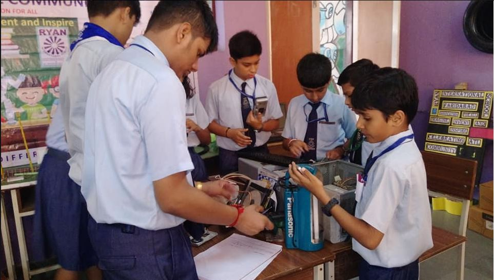

We recognize the urgent need of saving our environment. That is why all of our employees are committed and dedicated to helping our customers recycle their retired computer electronic equipment in our EPA Registered facility with advanced technologies and applications under government guidelines. We understand that many organizations have different needs when dealing with its electronic waste. So, No matter, you are small home business, mid-to-large size corporation, non-profit organization, government agency, or educational organization.
Do you have a bunch of old electronics that are cluttering up your room? Don't know what to do with it? Bring it us to get recycled or donated! We will be accepting almost all electronics, such as cell phones, laptops, CDs, chargers, printers, and much much more! Find out what types of electronic waste they accept. Examples include: tablets, smart phones, computers, hard drives, televisions, and printers. You may also want to collect light bulbs or batteries which might not be accepted by the same recycler. Commonly hardware stores, like Home Depot, will recycle light bulbs and batteries.